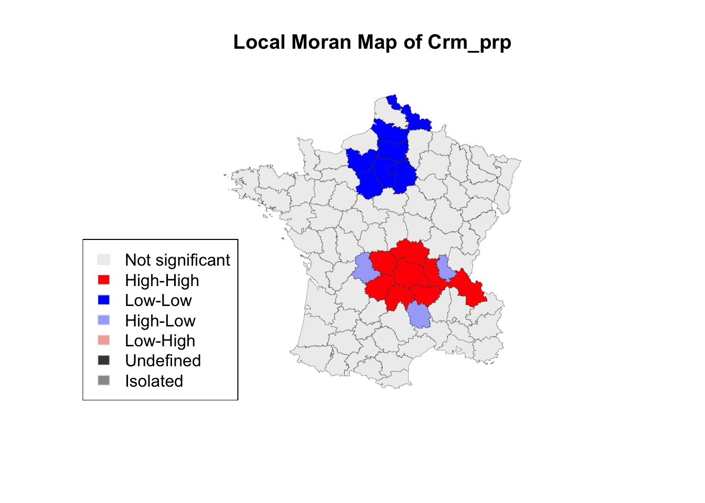

Chapter 15 Spatial Autocorrelation with rgeoda
This section of workshop notes is based off of the rgeoda documentation. This package is still in alpha, so the functionality may change. However, you are free to use it for a project for Luc’s class.
15.1 Install packages
Install the alpha version of rgeoda:
# install.packages("remotes")
remotes::install_github("lixun910/rgeoda")This will install a package that has the same internals as GeoDa, but can be accessed from R. It exposes a lot of functionality that can be hard to manage in R.
You should now be able to load the package with:
library(rgeoda)##
## Attaching package: 'rgeoda'## The following object is masked from 'package:spdep':
##
## skater15.2 R Markdown
We’ll be working in a R Markdown document today instead of a script. This allows for “literate code” (aka, you can write text along with code - it’s how these workshop notes are written). Learn more about R Markdown with this tutorial.
To create a new R Markdown file, click File > New File > R Markdown.
The R Markdown cheatsheet and guide can be found under Help > Cheatsheets > R Markdown Cheat Sheet / Reference Guide.
15.3 Load data
We’ll first load in sample data from the rgeoda package.
library(geodaData)
library(rgeoda) # if this doesn't work, have you installed rgeoda from Github?
guerry_sf <- geodaData::guerryQuestion
Take a few minutes and try to understand what this data is.
- How many observations and variables are there? What data is stored? (
dim(),str(),head(),summary()) - What does the metadata tell you about this data? (
?guerry) - What geometries are in this data? Can you make a quick map with
plot()? - What coordinate reference system is there? Is this data projected? (
st_crs())
Question
Try to make a simple map of one of the attributes of interest with tmap. Can you make it interactive?
15.4 Working with rgeoda
This workshop is based off of the rgeoda documentation book. rgeoda is still in alpha, so please let me know if you run into anything funky! You can also record any issues you have on the Github repository.
15.4.1 Convert to rgeoda object
We can convert an sf object into a rgeoda object:
guerry <- sf_to_geoda(guerry_sf)## Loading required package: wkbguerry## Reference class object of class "geoda"
## Field "gda":
## An object of class "_p_GeoDa"
## Slot "ref":
## <pointer: 0x7feffe016560>
##
## Field "map_type":
## [1] "polygon_type"
## Field "n_cols":
## [1] 0
## Field "n_obs":
## [1] 85
## Field "field_names":
## character(0)
## Field "field_types":
## character(0)
## Field "table":
## data frame with 0 columns and 85 rowsWhere did our data go? By default, the sf-to-rgeoda conversion removes the attributes (for faster processing with queen weights, local Moran, etc.). Set with_table() to TRUE to get the dataframe.
guerry <- sf_to_geoda(guerry_sf, with_table = TRUE)
guerry## Reference class object of class "geoda"
## Field "gda":
## An object of class "_p_GeoDa"
## Slot "ref":
## <pointer: 0x7feff214fd10>
##
## Field "map_type":
## [1] "polygon_type"
## Field "n_cols":
## [1] 26
## Field "n_obs":
## [1] 85
## Field "field_names":
## [1] "CODE_DE" "COUNT" "AVE_ID_" "dept" "Region" "Dprtmnt" "Crm_prs"
## [8] "Crm_prp" "Litercy" "Donatns" "Infants" "Suicids" "MainCty" "Wealth"
## [15] "Commerc" "Clergy" "Crm_prn" "Infntcd" "Dntn_cl" "Lottery" "Desertn"
## [22] "Instrct" "Prsttts" "Distanc" "Area" "Pop1831"
## Field "field_types":
## [1] "string" "numeric" "numeric" "numeric" "string" "string" "numeric"
## [8] "numeric" "numeric" "numeric" "numeric" "numeric" "numeric" "numeric"
## [15] "numeric" "numeric" "numeric" "numeric" "numeric" "numeric" "numeric"
## [22] "numeric" "numeric" "numeric" "numeric" "numeric"
## Field "table":
## CODE_DE COUNT AVE_ID_ dept Region Dprtmnt Crm_prs
## NA 01 1 49 1 E Ain 28870
## NA.1 02 1 812 2 N Aisne 26226
## NA.2 03 1 1418 3 C Allier 26747
## NA.3 04 1 1603 4 E Basses-Alpes 12935
## NA.4 05 1 1802 5 E Hautes-Alpes 17488
## NA.5 07 1 2249 7 S Ardeche 9474
## NA.6 08 1 35395 8 N Ardennes 35203
## NA.7 09 1 2526 9 S Ariege 6173
## NA.8 10 1 34410 10 E Aube 19602
## NA.9 11 1 2807 11 S Aude 15647
## NA.10 12 1 3369 12 S Aveyron 8236
## NA.11 13 1 3515 13 S Bouches-du-Rhone 13409
## NA.12 14 1 3667 14 N Calvados 17577
## NA.13 15 1 4268 15 C Cantal 18070
## NA.14 16 1 4527 16 W Charente 24964
## NA.15 17 1 5205 17 W Charente-Inferieure 18712
## NA.16 18 1 5417 18 C Cher 21934
## NA.17 19 1 5942 19 C Correze 15262
## NA.18 21 1 6174 21 E Cote-d'Or 32256
## NA.19 22 1 33634 22 W Cotes-du-Nord 28607
## NA.20 23 1 6735 23 C Creuse 37014
## NA.21 24 1 7186 24 W Dordogne 21585
## NA.22 25 1 7482 25 E Doubs 11560
## NA.23 26 1 8370 26 E Drome 13396
## NA.24 27 1 8612 27 N Eure 14795
## NA.25 28 1 9143 28 C Eure-et-Loir 21368
## NA.26 29 1 9659 29 W Finistere 29872
## NA.27 30 1 10264 30 S Gard 13115
## NA.28 31 1 10962 31 S Haute-Garonne 18642
## NA.29 32 1 11008 32 S Gers 18642
## NA.30 33 1 11520 33 W Gironde 24096
## NA.31 34 1 12162 34 S Herault 12814
## NA.32 35 1 12532 35 W Ille-et-Vilaine 22138
## NA.33 36 1 12687 36 C Indre 32404
## NA.34 37 1 13147 37 C Indre-et-Loire 19131
## NA.35 38 1 13341 38 E Isere 18785
## NA.36 39 1 13977 39 E Jura 26221
## NA.37 40 1 14431 40 W Landes 17687
## NA.38 41 1 14589 41 C Loir-et-Cher 21292
## NA.39 42 1 15070 42 C Loire 27491
## NA.40 43 1 15339 43 C Haute-Loire 16170
## NA.41 44 1 15550 44 W Loire-Inferieure 19314
## NA.42 45 1 15881 45 C Loiret 17722
## NA.43 46 1 16029 46 S Lot 5883
## NA.44 47 1 16326 47 W Lot-et-Garonne 22969
## NA.45 48 1 16732 48 S Lozere 7710
## NA.46 49 1 16834 49 W Maine-et-Loire 29692
## NA.47 50 1 17502 50 N Manche 31078
## NA.48 51 1 36143 51 N Marne 15602
## NA.49 52 1 34913 52 E Haute-Marne 26231
## NA.50 53 1 17708 53 W Mayenne 28331
## NA.51 54 1 18215 54 E Meurthe 26674
## NA.52 55 1 18431 55 N Meuse 24507
## NA.53 56 1 19153 56 W Morbihan 23316
## NA.54 57 1 19575 57 N Moselle 12153
## NA.55 58 1 20037 58 C Nievre 25087
## NA.56 59 1 36521 59 N Nord 26740
## NA.57 60 1 20823 60 N Oise 28180
## NA.58 61 1 21456 61 N Orne 28329
## NA.59 62 1 21990 62 N Pas-de-Calais 23101
## NA.60 63 1 22829 63 C Puy-de-Dome 17256
## NA.61 64 1 23572 64 W Basses-Pyrenees 16722
## NA.62 65 1 24112 65 S Hautes-Pyrenees 12223
## NA.63 66 1 24280 66 S Pyrenees-Orientales 6728
## NA.64 67 1 24814 67 E Bas-Rhin 12309
## NA.65 68 1 24947 68 E Haut-Rhin 7343
## NA.66 69 1 25381 69 E Rhone 18793
## NA.67 70 1 26063 70 E Haute-Saone 22339
## NA.68 71 1 26357 71 E Saone-et-Loire 28391
## NA.69 72 1 26842 72 C Sarthe 33913
## NA.70 75 4 31560 75 N Seine 13945
## NA.71 76 1 28118 76 N Seine-Inferieure 18355
## NA.72 77 1 28566 77 N Seine-et-Marne 22201
## NA.73 78 3 31598 78 N Seine-et-Oise 12477
## NA.74 79 1 29204 79 W Deux-Sevres 18400
## NA.75 80 1 29360 80 N Somme 33592
## NA.76 81 1 30128 81 S Tarn 13019
## NA.77 82 1 30546 82 S Tarn-et-Garonne 14790
## NA.78 83 1 30753 83 S Var 13145
## NA.79 84 1 30777 84 S Vaucluse 13576
## NA.80 85 1 31097 85 W Vendee 20827
## NA.81 86 1 31387 86 W Vienne 15010
## NA.82 87 1 31564 87 C Haute-Vienne 16256
## NA.83 88 1 31810 88 E Vosges 18835
## NA.84 89 1 32129 89 C Yonne 18006
## Crm_prp Litercy Donatns Infants Suicids MainCty Wealth Commerc
## NA 15890 37 5098 33120 35039 2 73 58
## NA.1 5521 51 8901 14572 12831 2 22 10
## NA.2 7925 13 10973 17044 114121 2 61 66
## NA.3 7289 46 2733 23018 14238 1 76 49
## NA.4 8174 69 6962 23076 16171 1 83 65
## NA.5 10263 27 3188 42117 52547 1 84 1
## NA.6 8847 67 6400 16106 26198 2 33 4
## NA.7 9597 18 3542 22916 123625 1 72 60
## NA.8 4086 59 3608 18642 10989 2 14 3
## NA.9 10431 34 2582 20225 66498 2 17 35
## NA.10 6731 31 3211 21981 116671 2 50 70
## NA.11 5291 38 2314 9325 8107 3 2 26
## NA.12 4500 52 27830 8983 31807 2 10 48
## NA.13 11645 31 4093 15335 87338 2 59 7
## NA.14 13018 36 13602 19454 25720 2 86 47
## NA.15 5357 39 13254 23999 16798 2 18 5
## NA.16 10503 13 9561 23574 19497 2 63 56
## NA.17 12949 12 14993 19330 47480 2 74 80
## NA.18 9159 60 2540 15599 16128 2 16 12
## NA.19 7050 16 10387 36098 75056 2 70 86
## NA.20 20235 23 10997 14363 77823 1 78 82
## NA.21 10237 18 4687 21375 36024 2 60 72
## NA.22 5914 73 3436 12512 40690 2 31 57
## NA.23 7759 42 2829 16348 23816 2 66 41
## NA.24 4774 51 11712 16039 13493 2 20 17
## NA.25 4016 54 4553 14475 15015 2 11 21
## NA.26 6842 15 23945 28392 25143 2 36 84
## NA.27 7990 40 3048 28726 18292 2 26 31
## NA.28 7204 31 2286 15378 56140 3 23 40
## NA.29 10486 38 2848 15250 61510 2 40 30
## NA.30 7423 40 5076 10676 19220 3 8 20
## NA.31 10954 45 1680 21346 30869 2 12 34
## NA.32 6524 25 7686 40736 45180 2 55 77
## NA.33 7624 17 11315 20046 25014 2 54 55
## NA.34 6909 27 7254 16601 15272 2 27 25
## NA.35 8326 29 4077 12236 36275 2 65 46
## NA.36 8059 73 3012 20384 34476 2 62 54
## NA.37 6170 28 12059 15302 35375 1 81 68
## NA.38 6017 27 5626 13364 14417 2 19 23
## NA.39 12665 29 3446 29605 71364 2 24 79
## NA.40 18043 21 2746 31017 163241 2 75 85
## NA.41 9392 24 8310 14097 27289 3 80 76
## NA.42 5042 42 4753 9986 11813 2 9 24
## NA.43 9049 24 5194 20383 48783 2 42 67
## NA.44 8943 31 4432 17681 38501 2 7 53
## NA.45 5990 27 2040 25157 11092 1 77 69
## NA.46 8520 23 4410 18708 33358 2 34 52
## NA.47 7424 43 5179 14281 55564 2 32 73
## NA.48 4950 63 3963 11267 8334 2 13 6
## NA.49 9539 72 4013 17507 19586 1 25 7
## NA.50 9198 19 2107 18544 28331 2 38 75
## NA.51 6831 68 3912 12355 15652 2 57 11
## NA.52 9190 74 4196 17333 13463 2 52 2
## NA.53 7940 14 14739 31754 34196 2 48 81
## NA.54 4529 57 9515 13877 25572 3 53 19
## NA.55 8236 20 10452 19747 29381 2 44 33
## NA.56 6175 45 6092 8926 13851 3 28 38
## NA.57 6659 54 5501 18021 5994 2 15 14
## NA.58 8248 45 9242 20852 34069 2 35 62
## NA.59 4040 49 5740 10575 15400 2 45 39
## NA.60 12141 19 5963 22948 78148 2 51 78
## NA.61 8533 47 3299 12393 65995 2 79 71
## NA.62 9797 53 6001 12125 148039 2 85 51
## NA.63 7632 31 11644 15167 37843 2 71 37
## NA.64 4920 62 14472 14356 18623 3 46 16
## NA.65 4915 71 6001 14783 21233 2 58 29
## NA.66 4504 45 1983 3910 17003 3 6 18
## NA.67 7770 59 11701 11850 39714 1 69 27
## NA.68 10708 32 3710 20442 22184 2 49 61
## NA.69 8294 30 3357 10779 29280 2 41 45
## NA.70 1368 71 4204 2660 3632 3 1 9
## NA.71 2906 43 7245 7506 9523 3 3 22
## NA.72 5786 54 5303 16324 7315 2 4 13
## NA.73 3879 56 4007 16303 3460 2 5 8
## NA.74 6863 41 16956 25461 24533 2 39 59
## NA.75 7144 44 4964 12447 12836 2 21 36
## NA.76 6241 20 3449 29305 68980 2 47 44
## NA.77 8680 25 4558 23771 48317 2 29 50
## NA.78 9572 23 2449 14800 13380 2 43 39
## NA.79 5731 37 1246 17239 19024 2 64 28
## NA.80 7566 28 14035 62486 67963 1 56 64
## NA.81 4710 25 8922 35224 21851 2 68 43
## NA.82 6402 13 13817 19940 33497 2 67 63
## NA.83 9044 62 4040 14978 33029 2 82 42
## NA.84 6516 47 4276 16616 12789 2 30 15
## Clergy Crm_prn Infntcd Dntn_cl Lottery Desertn Instrct Prsttts
## NA 11 71 60 69 41 55 46 13
## NA.1 82 4 82 36 38 82 24 327
## NA.2 68 46 42 76 66 16 85 34
## NA.3 5 70 12 37 80 32 29 2
## NA.4 10 22 23 64 79 35 7 1
## NA.5 28 76 47 67 70 19 62 1
## NA.6 50 53 85 49 31 62 9 83
## NA.7 39 74 28 63 75 22 77 3
## NA.8 42 77 54 9 28 86 15 207
## NA.9 15 80 35 27 50 63 48 1
## NA.10 3 51 5 23 81 10 44 4
## NA.11 30 45 74 55 3 23 43 25
## NA.12 7 57 56 11 13 12 22 194
## NA.13 6 79 83 66 82 1 51 20
## NA.14 79 2 7 81 60 61 47 8
## NA.15 86 3 38 72 35 74 42 27
## NA.16 83 69 11 86 44 51 83 26
## NA.17 46 86 16 82 84 2 86 3
## NA.18 37 49 27 18 33 78 13 206
## NA.19 30 6 69 15 72 47 80 16
## NA.20 75 75 24 75 85 4 71 12
## NA.21 77 64 18 79 77 44 78 3
## NA.22 24 38 25 6 18 73 2 65
## NA.23 22 21 13 62 54 46 38 8
## NA.24 27 39 45 45 47 27 23 179
## NA.25 16 18 62 14 48 72 18 180
## NA.26 66 24 78 25 36 77 81 42
## NA.27 81 15 39 59 20 40 40 5
## NA.28 23 62 59 13 25 15 33 8
## NA.29 12 43 13 32 74 30 44 1
## NA.30 69 27 80 48 4 13 41 39
## NA.31 67 47 51 28 19 43 32 9
## NA.32 19 12 31 22 37 50 66 77
## NA.33 84 82 19 83 69 29 79 14
## NA.34 58 48 3 41 15 49 63 59
## NA.35 53 52 27 73 23 26 57 12
## NA.36 32 84 66 43 39 71 3 32
## NA.37 63 1 43 56 73 28 58 3
## NA.38 57 65 37 70 46 54 61 54
## NA.39 34 78 77 34 42 6 56 14
## NA.40 8 73 17 65 62 3 72 10
## NA.41 73 56 52 29 12 45 67 63
## NA.42 54 44 22 16 17 60 37 256
## NA.43 20 54 15 68 78 24 68 1
## NA.44 49 26 32 46 52 34 50 5
## NA.45 2 72 45 42 86 5 60 0
## NA.46 43 19 36 20 24 76 70 35
## NA.47 9 33 70 3 59 21 36 98
## NA.48 47 8 58 39 22 81 10 262
## NA.49 18 63 55 4 56 65 4 138
## NA.50 40 59 40 8 61 58 75 46
## NA.51 26 5 71 1 21 70 8 154
## NA.52 33 17 65 12 58 59 1 131
## NA.53 31 9 29 7 32 69 82 38
## NA.54 13 35 9 2 16 68 16 165
## NA.55 80 83 20 80 63 37 74 39
## NA.56 74 14 81 38 7 64 30 308
## NA.57 60 31 86 50 43 57 20 337
## NA.58 21 29 50 31 57 25 33 117
## NA.59 44 36 79 10 27 48 26 163
## NA.60 52 42 63 61 53 8 76 62
## NA.61 38 34 72 60 34 7 28 12
## NA.62 17 85 75 71 76 20 21 5
## NA.63 4 67 84 77 11 18 52 5
## NA.64 64 23 48 51 5 53 12 101
## NA.65 65 40 53 17 10 56 5 26
## NA.66 35 37 33 21 2 14 31 104
## NA.67 25 25 68 57 65 83 14 99
## NA.68 59 11 10 58 45 31 49 40
## NA.69 41 41 57 19 49 75 35 79
## NA.70 85 60 67 53 1 33 6 4744
## NA.71 62 28 61 74 9 36 35 546
## NA.72 56 16 73 26 29 67 37 453
## NA.73 45 10 30 24 6 42 17 874
## NA.74 72 30 4 85 71 84 39 6
## NA.75 48 7 64 33 30 80 34 302
## NA.76 14 13 9 47 67 17 73 3
## NA.77 29 66 41 52 64 39 64 4
## NA.78 61 55 49 40 26 52 69 6
## NA.79 78 61 76 54 8 41 45 2
## NA.80 70 50 44 30 68 79 59 4
## NA.81 71 20 1 44 40 38 65 18
## NA.82 76 68 6 78 55 11 84 7
## NA.83 51 58 34 5 14 85 11 43
## NA.84 55 32 22 35 51 66 27 272
## Distanc Area Pop1831
## NA 218.372 5762 346.03
## NA.1 65.945 7369 513.00
## NA.2 161.927 7340 298.26
## NA.3 351.399 6925 155.90
## NA.4 320.280 5549 129.10
## NA.5 279.413 5529 340.73
## NA.6 105.694 5229 289.62
## NA.7 385.313 4890 253.12
## NA.8 83.244 6004 246.36
## NA.9 370.949 6139 270.13
## NA.10 296.089 8735 359.06
## NA.11 362.568 5087 359.47
## NA.12 117.487 5548 494.70
## NA.13 245.849 5726 258.59
## NA.14 224.339 5956 362.53
## NA.15 238.538 6864 445.25
## NA.16 116.257 7235 256.06
## NA.17 227.899 5857 294.83
## NA.18 136.109 8763 375.88
## NA.19 225.161 6878 598.87
## NA.20 180.846 5565 265.38
## NA.21 253.776 9060 482.75
## NA.22 202.065 5234 265.54
## NA.23 295.543 6530 299.56
## NA.24 61.863 6040 424.25
## NA.25 54.558 5880 278.82
## NA.26 276.210 6733 524.40
## NA.27 323.004 5853 357.38
## NA.28 361.668 6257 427.86
## NA.29 343.569 6309 312.16
## NA.30 291.624 10000 554.23
## NA.31 344.030 6101 346.30
## NA.32 179.379 6775 547.05
## NA.33 139.587 6791 245.29
## NA.34 126.468 6127 297.02
## NA.35 268.661 7431 550.26
## NA.36 197.155 4999 312.50
## NA.37 344.676 9243 281.50
## NA.38 90.735 6343 235.75
## NA.39 215.598 4781 391.22
## NA.40 248.877 4977 292.08
## NA.41 199.167 6815 470.09
## NA.42 61.106 6775 305.28
## NA.43 275.725 5217 283.83
## NA.44 302.345 5361 346.89
## NA.45 283.810 5167 140.35
## NA.46 157.437 7166 467.87
## NA.47 157.187 5938 591.28
## NA.48 77.364 6211 337.08
## NA.49 129.765 8162 249.83
## NA.50 139.999 5175 352.59
## NA.51 159.648 5241 415.57
## NA.52 126.378 6216 314.59
## NA.53 230.531 6823 433.52
## NA.54 180.462 6216 417.00
## NA.55 119.718 6817 282.52
## NA.56 106.335 5743 989.94
## NA.57 33.768 5860 397.73
## NA.58 97.554 6103 441.88
## NA.59 104.400 6671 655.22
## NA.60 205.218 7970 573.11
## NA.61 387.935 7645 428.40
## NA.62 386.559 4464 233.03
## NA.63 403.445 4116 157.05
## NA.64 217.752 4755 540.21
## NA.65 217.971 3525 424.26
## NA.66 213.032 3249 434.43
## NA.67 176.135 5360 338.91
## NA.68 168.713 8575 523.97
## NA.69 108.294 6206 457.37
## NA.70 0.000 762 935.11
## NA.71 75.658 6278 693.68
## NA.72 27.647 5915 323.89
## NA.73 16.888 5334 448.18
## NA.74 188.474 5999 297.85
## NA.75 69.520 6170 543.70
## NA.76 328.146 5758 333.84
## NA.77 313.090 3718 242.51
## NA.78 389.512 5973 317.50
## NA.79 337.215 3567 239.11
## NA.80 212.459 6720 330.36
## NA.81 170.523 6990 282.73
## NA.82 198.874 5520 285.13
## NA.83 174.477 5874 397.99
## NA.84 81.797 7427 352.49
Alternatively, you can read a shapefile, geojson (and other spatial file formats) directly into R, with geoda_open():
chicago_libraries <- geoda_open("https://data.cityofchicago.org/resource/x8fc-8rcq.geojson")
chicago_libraries```
15.4.2 Looking at the rgeoda object
Currently, rgeoda is structured more like Python; we may change this in a future implementation but it’s what we have so far.
Try out the following:
guerry$field_names## [1] "CODE_DE" "COUNT" "AVE_ID_" "dept" "Region" "Dprtmnt" "Crm_prs"
## [8] "Crm_prp" "Litercy" "Donatns" "Infants" "Suicids" "MainCty" "Wealth"
## [15] "Commerc" "Clergy" "Crm_prn" "Infntcd" "Dntn_cl" "Lottery" "Desertn"
## [22] "Instrct" "Prsttts" "Distanc" "Area" "Pop1831"guerry$field_types## [1] "string" "numeric" "numeric" "numeric" "string" "string" "numeric"
## [8] "numeric" "numeric" "numeric" "numeric" "numeric" "numeric" "numeric"
## [15] "numeric" "numeric" "numeric" "numeric" "numeric" "numeric" "numeric"
## [22] "numeric" "numeric" "numeric" "numeric" "numeric"guerry$n_cols## [1] 26guerry$n_obs## [1] 85guerry$table## CODE_DE COUNT AVE_ID_ dept Region Dprtmnt Crm_prs
## NA 01 1 49 1 E Ain 28870
## NA.1 02 1 812 2 N Aisne 26226
## NA.2 03 1 1418 3 C Allier 26747
## NA.3 04 1 1603 4 E Basses-Alpes 12935
## NA.4 05 1 1802 5 E Hautes-Alpes 17488
## NA.5 07 1 2249 7 S Ardeche 9474
## NA.6 08 1 35395 8 N Ardennes 35203
## NA.7 09 1 2526 9 S Ariege 6173
## NA.8 10 1 34410 10 E Aube 19602
## NA.9 11 1 2807 11 S Aude 15647
## NA.10 12 1 3369 12 S Aveyron 8236
## NA.11 13 1 3515 13 S Bouches-du-Rhone 13409
## NA.12 14 1 3667 14 N Calvados 17577
## NA.13 15 1 4268 15 C Cantal 18070
## NA.14 16 1 4527 16 W Charente 24964
## NA.15 17 1 5205 17 W Charente-Inferieure 18712
## NA.16 18 1 5417 18 C Cher 21934
## NA.17 19 1 5942 19 C Correze 15262
## NA.18 21 1 6174 21 E Cote-d'Or 32256
## NA.19 22 1 33634 22 W Cotes-du-Nord 28607
## NA.20 23 1 6735 23 C Creuse 37014
## NA.21 24 1 7186 24 W Dordogne 21585
## NA.22 25 1 7482 25 E Doubs 11560
## NA.23 26 1 8370 26 E Drome 13396
## NA.24 27 1 8612 27 N Eure 14795
## NA.25 28 1 9143 28 C Eure-et-Loir 21368
## NA.26 29 1 9659 29 W Finistere 29872
## NA.27 30 1 10264 30 S Gard 13115
## NA.28 31 1 10962 31 S Haute-Garonne 18642
## NA.29 32 1 11008 32 S Gers 18642
## NA.30 33 1 11520 33 W Gironde 24096
## NA.31 34 1 12162 34 S Herault 12814
## NA.32 35 1 12532 35 W Ille-et-Vilaine 22138
## NA.33 36 1 12687 36 C Indre 32404
## NA.34 37 1 13147 37 C Indre-et-Loire 19131
## NA.35 38 1 13341 38 E Isere 18785
## NA.36 39 1 13977 39 E Jura 26221
## NA.37 40 1 14431 40 W Landes 17687
## NA.38 41 1 14589 41 C Loir-et-Cher 21292
## NA.39 42 1 15070 42 C Loire 27491
## NA.40 43 1 15339 43 C Haute-Loire 16170
## NA.41 44 1 15550 44 W Loire-Inferieure 19314
## NA.42 45 1 15881 45 C Loiret 17722
## NA.43 46 1 16029 46 S Lot 5883
## NA.44 47 1 16326 47 W Lot-et-Garonne 22969
## NA.45 48 1 16732 48 S Lozere 7710
## NA.46 49 1 16834 49 W Maine-et-Loire 29692
## NA.47 50 1 17502 50 N Manche 31078
## NA.48 51 1 36143 51 N Marne 15602
## NA.49 52 1 34913 52 E Haute-Marne 26231
## NA.50 53 1 17708 53 W Mayenne 28331
## NA.51 54 1 18215 54 E Meurthe 26674
## NA.52 55 1 18431 55 N Meuse 24507
## NA.53 56 1 19153 56 W Morbihan 23316
## NA.54 57 1 19575 57 N Moselle 12153
## NA.55 58 1 20037 58 C Nievre 25087
## NA.56 59 1 36521 59 N Nord 26740
## NA.57 60 1 20823 60 N Oise 28180
## NA.58 61 1 21456 61 N Orne 28329
## NA.59 62 1 21990 62 N Pas-de-Calais 23101
## NA.60 63 1 22829 63 C Puy-de-Dome 17256
## NA.61 64 1 23572 64 W Basses-Pyrenees 16722
## NA.62 65 1 24112 65 S Hautes-Pyrenees 12223
## NA.63 66 1 24280 66 S Pyrenees-Orientales 6728
## NA.64 67 1 24814 67 E Bas-Rhin 12309
## NA.65 68 1 24947 68 E Haut-Rhin 7343
## NA.66 69 1 25381 69 E Rhone 18793
## NA.67 70 1 26063 70 E Haute-Saone 22339
## NA.68 71 1 26357 71 E Saone-et-Loire 28391
## NA.69 72 1 26842 72 C Sarthe 33913
## NA.70 75 4 31560 75 N Seine 13945
## NA.71 76 1 28118 76 N Seine-Inferieure 18355
## NA.72 77 1 28566 77 N Seine-et-Marne 22201
## NA.73 78 3 31598 78 N Seine-et-Oise 12477
## NA.74 79 1 29204 79 W Deux-Sevres 18400
## NA.75 80 1 29360 80 N Somme 33592
## NA.76 81 1 30128 81 S Tarn 13019
## NA.77 82 1 30546 82 S Tarn-et-Garonne 14790
## NA.78 83 1 30753 83 S Var 13145
## NA.79 84 1 30777 84 S Vaucluse 13576
## NA.80 85 1 31097 85 W Vendee 20827
## NA.81 86 1 31387 86 W Vienne 15010
## NA.82 87 1 31564 87 C Haute-Vienne 16256
## NA.83 88 1 31810 88 E Vosges 18835
## NA.84 89 1 32129 89 C Yonne 18006
## Crm_prp Litercy Donatns Infants Suicids MainCty Wealth Commerc
## NA 15890 37 5098 33120 35039 2 73 58
## NA.1 5521 51 8901 14572 12831 2 22 10
## NA.2 7925 13 10973 17044 114121 2 61 66
## NA.3 7289 46 2733 23018 14238 1 76 49
## NA.4 8174 69 6962 23076 16171 1 83 65
## NA.5 10263 27 3188 42117 52547 1 84 1
## NA.6 8847 67 6400 16106 26198 2 33 4
## NA.7 9597 18 3542 22916 123625 1 72 60
## NA.8 4086 59 3608 18642 10989 2 14 3
## NA.9 10431 34 2582 20225 66498 2 17 35
## NA.10 6731 31 3211 21981 116671 2 50 70
## NA.11 5291 38 2314 9325 8107 3 2 26
## NA.12 4500 52 27830 8983 31807 2 10 48
## NA.13 11645 31 4093 15335 87338 2 59 7
## NA.14 13018 36 13602 19454 25720 2 86 47
## NA.15 5357 39 13254 23999 16798 2 18 5
## NA.16 10503 13 9561 23574 19497 2 63 56
## NA.17 12949 12 14993 19330 47480 2 74 80
## NA.18 9159 60 2540 15599 16128 2 16 12
## NA.19 7050 16 10387 36098 75056 2 70 86
## NA.20 20235 23 10997 14363 77823 1 78 82
## NA.21 10237 18 4687 21375 36024 2 60 72
## NA.22 5914 73 3436 12512 40690 2 31 57
## NA.23 7759 42 2829 16348 23816 2 66 41
## NA.24 4774 51 11712 16039 13493 2 20 17
## NA.25 4016 54 4553 14475 15015 2 11 21
## NA.26 6842 15 23945 28392 25143 2 36 84
## NA.27 7990 40 3048 28726 18292 2 26 31
## NA.28 7204 31 2286 15378 56140 3 23 40
## NA.29 10486 38 2848 15250 61510 2 40 30
## NA.30 7423 40 5076 10676 19220 3 8 20
## NA.31 10954 45 1680 21346 30869 2 12 34
## NA.32 6524 25 7686 40736 45180 2 55 77
## NA.33 7624 17 11315 20046 25014 2 54 55
## NA.34 6909 27 7254 16601 15272 2 27 25
## NA.35 8326 29 4077 12236 36275 2 65 46
## NA.36 8059 73 3012 20384 34476 2 62 54
## NA.37 6170 28 12059 15302 35375 1 81 68
## NA.38 6017 27 5626 13364 14417 2 19 23
## NA.39 12665 29 3446 29605 71364 2 24 79
## NA.40 18043 21 2746 31017 163241 2 75 85
## NA.41 9392 24 8310 14097 27289 3 80 76
## NA.42 5042 42 4753 9986 11813 2 9 24
## NA.43 9049 24 5194 20383 48783 2 42 67
## NA.44 8943 31 4432 17681 38501 2 7 53
## NA.45 5990 27 2040 25157 11092 1 77 69
## NA.46 8520 23 4410 18708 33358 2 34 52
## NA.47 7424 43 5179 14281 55564 2 32 73
## NA.48 4950 63 3963 11267 8334 2 13 6
## NA.49 9539 72 4013 17507 19586 1 25 7
## NA.50 9198 19 2107 18544 28331 2 38 75
## NA.51 6831 68 3912 12355 15652 2 57 11
## NA.52 9190 74 4196 17333 13463 2 52 2
## NA.53 7940 14 14739 31754 34196 2 48 81
## NA.54 4529 57 9515 13877 25572 3 53 19
## NA.55 8236 20 10452 19747 29381 2 44 33
## NA.56 6175 45 6092 8926 13851 3 28 38
## NA.57 6659 54 5501 18021 5994 2 15 14
## NA.58 8248 45 9242 20852 34069 2 35 62
## NA.59 4040 49 5740 10575 15400 2 45 39
## NA.60 12141 19 5963 22948 78148 2 51 78
## NA.61 8533 47 3299 12393 65995 2 79 71
## NA.62 9797 53 6001 12125 148039 2 85 51
## NA.63 7632 31 11644 15167 37843 2 71 37
## NA.64 4920 62 14472 14356 18623 3 46 16
## NA.65 4915 71 6001 14783 21233 2 58 29
## NA.66 4504 45 1983 3910 17003 3 6 18
## NA.67 7770 59 11701 11850 39714 1 69 27
## NA.68 10708 32 3710 20442 22184 2 49 61
## NA.69 8294 30 3357 10779 29280 2 41 45
## NA.70 1368 71 4204 2660 3632 3 1 9
## NA.71 2906 43 7245 7506 9523 3 3 22
## NA.72 5786 54 5303 16324 7315 2 4 13
## NA.73 3879 56 4007 16303 3460 2 5 8
## NA.74 6863 41 16956 25461 24533 2 39 59
## NA.75 7144 44 4964 12447 12836 2 21 36
## NA.76 6241 20 3449 29305 68980 2 47 44
## NA.77 8680 25 4558 23771 48317 2 29 50
## NA.78 9572 23 2449 14800 13380 2 43 39
## NA.79 5731 37 1246 17239 19024 2 64 28
## NA.80 7566 28 14035 62486 67963 1 56 64
## NA.81 4710 25 8922 35224 21851 2 68 43
## NA.82 6402 13 13817 19940 33497 2 67 63
## NA.83 9044 62 4040 14978 33029 2 82 42
## NA.84 6516 47 4276 16616 12789 2 30 15
## Clergy Crm_prn Infntcd Dntn_cl Lottery Desertn Instrct Prsttts
## NA 11 71 60 69 41 55 46 13
## NA.1 82 4 82 36 38 82 24 327
## NA.2 68 46 42 76 66 16 85 34
## NA.3 5 70 12 37 80 32 29 2
## NA.4 10 22 23 64 79 35 7 1
## NA.5 28 76 47 67 70 19 62 1
## NA.6 50 53 85 49 31 62 9 83
## NA.7 39 74 28 63 75 22 77 3
## NA.8 42 77 54 9 28 86 15 207
## NA.9 15 80 35 27 50 63 48 1
## NA.10 3 51 5 23 81 10 44 4
## NA.11 30 45 74 55 3 23 43 25
## NA.12 7 57 56 11 13 12 22 194
## NA.13 6 79 83 66 82 1 51 20
## NA.14 79 2 7 81 60 61 47 8
## NA.15 86 3 38 72 35 74 42 27
## NA.16 83 69 11 86 44 51 83 26
## NA.17 46 86 16 82 84 2 86 3
## NA.18 37 49 27 18 33 78 13 206
## NA.19 30 6 69 15 72 47 80 16
## NA.20 75 75 24 75 85 4 71 12
## NA.21 77 64 18 79 77 44 78 3
## NA.22 24 38 25 6 18 73 2 65
## NA.23 22 21 13 62 54 46 38 8
## NA.24 27 39 45 45 47 27 23 179
## NA.25 16 18 62 14 48 72 18 180
## NA.26 66 24 78 25 36 77 81 42
## NA.27 81 15 39 59 20 40 40 5
## NA.28 23 62 59 13 25 15 33 8
## NA.29 12 43 13 32 74 30 44 1
## NA.30 69 27 80 48 4 13 41 39
## NA.31 67 47 51 28 19 43 32 9
## NA.32 19 12 31 22 37 50 66 77
## NA.33 84 82 19 83 69 29 79 14
## NA.34 58 48 3 41 15 49 63 59
## NA.35 53 52 27 73 23 26 57 12
## NA.36 32 84 66 43 39 71 3 32
## NA.37 63 1 43 56 73 28 58 3
## NA.38 57 65 37 70 46 54 61 54
## NA.39 34 78 77 34 42 6 56 14
## NA.40 8 73 17 65 62 3 72 10
## NA.41 73 56 52 29 12 45 67 63
## NA.42 54 44 22 16 17 60 37 256
## NA.43 20 54 15 68 78 24 68 1
## NA.44 49 26 32 46 52 34 50 5
## NA.45 2 72 45 42 86 5 60 0
## NA.46 43 19 36 20 24 76 70 35
## NA.47 9 33 70 3 59 21 36 98
## NA.48 47 8 58 39 22 81 10 262
## NA.49 18 63 55 4 56 65 4 138
## NA.50 40 59 40 8 61 58 75 46
## NA.51 26 5 71 1 21 70 8 154
## NA.52 33 17 65 12 58 59 1 131
## NA.53 31 9 29 7 32 69 82 38
## NA.54 13 35 9 2 16 68 16 165
## NA.55 80 83 20 80 63 37 74 39
## NA.56 74 14 81 38 7 64 30 308
## NA.57 60 31 86 50 43 57 20 337
## NA.58 21 29 50 31 57 25 33 117
## NA.59 44 36 79 10 27 48 26 163
## NA.60 52 42 63 61 53 8 76 62
## NA.61 38 34 72 60 34 7 28 12
## NA.62 17 85 75 71 76 20 21 5
## NA.63 4 67 84 77 11 18 52 5
## NA.64 64 23 48 51 5 53 12 101
## NA.65 65 40 53 17 10 56 5 26
## NA.66 35 37 33 21 2 14 31 104
## NA.67 25 25 68 57 65 83 14 99
## NA.68 59 11 10 58 45 31 49 40
## NA.69 41 41 57 19 49 75 35 79
## NA.70 85 60 67 53 1 33 6 4744
## NA.71 62 28 61 74 9 36 35 546
## NA.72 56 16 73 26 29 67 37 453
## NA.73 45 10 30 24 6 42 17 874
## NA.74 72 30 4 85 71 84 39 6
## NA.75 48 7 64 33 30 80 34 302
## NA.76 14 13 9 47 67 17 73 3
## NA.77 29 66 41 52 64 39 64 4
## NA.78 61 55 49 40 26 52 69 6
## NA.79 78 61 76 54 8 41 45 2
## NA.80 70 50 44 30 68 79 59 4
## NA.81 71 20 1 44 40 38 65 18
## NA.82 76 68 6 78 55 11 84 7
## NA.83 51 58 34 5 14 85 11 43
## NA.84 55 32 22 35 51 66 27 272
## Distanc Area Pop1831
## NA 218.372 5762 346.03
## NA.1 65.945 7369 513.00
## NA.2 161.927 7340 298.26
## NA.3 351.399 6925 155.90
## NA.4 320.280 5549 129.10
## NA.5 279.413 5529 340.73
## NA.6 105.694 5229 289.62
## NA.7 385.313 4890 253.12
## NA.8 83.244 6004 246.36
## NA.9 370.949 6139 270.13
## NA.10 296.089 8735 359.06
## NA.11 362.568 5087 359.47
## NA.12 117.487 5548 494.70
## NA.13 245.849 5726 258.59
## NA.14 224.339 5956 362.53
## NA.15 238.538 6864 445.25
## NA.16 116.257 7235 256.06
## NA.17 227.899 5857 294.83
## NA.18 136.109 8763 375.88
## NA.19 225.161 6878 598.87
## NA.20 180.846 5565 265.38
## NA.21 253.776 9060 482.75
## NA.22 202.065 5234 265.54
## NA.23 295.543 6530 299.56
## NA.24 61.863 6040 424.25
## NA.25 54.558 5880 278.82
## NA.26 276.210 6733 524.40
## NA.27 323.004 5853 357.38
## NA.28 361.668 6257 427.86
## NA.29 343.569 6309 312.16
## NA.30 291.624 10000 554.23
## NA.31 344.030 6101 346.30
## NA.32 179.379 6775 547.05
## NA.33 139.587 6791 245.29
## NA.34 126.468 6127 297.02
## NA.35 268.661 7431 550.26
## NA.36 197.155 4999 312.50
## NA.37 344.676 9243 281.50
## NA.38 90.735 6343 235.75
## NA.39 215.598 4781 391.22
## NA.40 248.877 4977 292.08
## NA.41 199.167 6815 470.09
## NA.42 61.106 6775 305.28
## NA.43 275.725 5217 283.83
## NA.44 302.345 5361 346.89
## NA.45 283.810 5167 140.35
## NA.46 157.437 7166 467.87
## NA.47 157.187 5938 591.28
## NA.48 77.364 6211 337.08
## NA.49 129.765 8162 249.83
## NA.50 139.999 5175 352.59
## NA.51 159.648 5241 415.57
## NA.52 126.378 6216 314.59
## NA.53 230.531 6823 433.52
## NA.54 180.462 6216 417.00
## NA.55 119.718 6817 282.52
## NA.56 106.335 5743 989.94
## NA.57 33.768 5860 397.73
## NA.58 97.554 6103 441.88
## NA.59 104.400 6671 655.22
## NA.60 205.218 7970 573.11
## NA.61 387.935 7645 428.40
## NA.62 386.559 4464 233.03
## NA.63 403.445 4116 157.05
## NA.64 217.752 4755 540.21
## NA.65 217.971 3525 424.26
## NA.66 213.032 3249 434.43
## NA.67 176.135 5360 338.91
## NA.68 168.713 8575 523.97
## NA.69 108.294 6206 457.37
## NA.70 0.000 762 935.11
## NA.71 75.658 6278 693.68
## NA.72 27.647 5915 323.89
## NA.73 16.888 5334 448.18
## NA.74 188.474 5999 297.85
## NA.75 69.520 6170 543.70
## NA.76 328.146 5758 333.84
## NA.77 313.090 3718 242.51
## NA.78 389.512 5973 317.50
## NA.79 337.215 3567 239.11
## NA.80 212.459 6720 330.36
## NA.81 170.523 6990 282.73
## NA.82 198.874 5520 285.13
## NA.83 174.477 5874 397.99
## NA.84 81.797 7427 352.49Note that this is not really a data frame - rgeoda right now is optimized to help you do spatial weights, autocorrelation and clustering.
So let’s do those things!
15.5 Spatial Analysis with rgeoda
Let’s create weights from an rgeoda object:
queen_weights(guerry)## Reference class object of class "Weight"
## Field "gda_w":
## An object of class "_p_GeoDaWeight"
## Slot "ref":
## <pointer: 0x7feff20596b0>
##
## Field "is_symmetric":
## [1] TRUE
## Field "sparsity":
## [1] 0
## Field "density":
## [1] 5.813149
## Field "min_neighbors":
## [1] 2
## Field "max_neighbors":
## [1] 8
## Field "num_obs":
## [1] 85
## Field "mean_neighbors":
## [1] 4.941176
## Field "median_neighbors":
## [1] 5Much easier than spdep, eh?
You can change the order from first to second:
queen_weights(guerry, order = 2)## Reference class object of class "Weight"
## Field "gda_w":
## An object of class "_p_GeoDaWeight"
## Slot "ref":
## <pointer: 0x7feff3a34c30>
##
## Field "is_symmetric":
## [1] TRUE
## Field "sparsity":
## [1] 0
## Field "density":
## [1] 10.46367
## Field "min_neighbors":
## [1] 2
## Field "max_neighbors":
## [1] 14
## Field "num_obs":
## [1] 85
## Field "mean_neighbors":
## [1] 8.894118
## Field "median_neighbors":
## [1] 9We can save the original weights:
queen_w <- queen_weights(guerry)Then take a look at the class:
class(queen_w)## [1] "Weight"
## attr(,"package")
## [1] "rgeoda"Question
Try out the following functions:
queen_w$is_symmetricmin_nbrsmax_nbrsGetNeighbors(0)
Weight object
Many more types of weights can be found here.
15.5.1 Detour: saving your weights
To save contiguity-based weights, use the SaveToFile() function in rgeoda.
The four arguments you need for SaveToFile() are the:
- path/name of the file you’re going to create (ends in .gal for contiguity-based weights, .gwt for distance-based weights)
- layer name (aka file name without suffix, ie XXX.shp )
- id column name, a unique value for each observation
- id column itself
id_names <- guerry$GetIntegerCol("CODE_DE")
queen_w$SaveToFile("guerry_queen.gal", "Guerry", "CODE_DE", id_names)15.6 Calculating the Local Moran statistic
You can then calculate the Local Moran statistic once you have your weights:
crm_prp <- guerry_sf$Crm_prp
lisa <- local_moran(queen_w, crm_prp)And make a map!
lisa_colors <- lisa$GetColors()
lisa_labels <- lisa$GetLabels()
lisa_clusters <- lisa$GetClusterIndicators()
plot(st_geometry(guerry_sf),
col=sapply(lisa_clusters, function(x){return(lisa_colors[[x+1]])}),
border = "#333333", lwd=0.2)
title(main = "Local Moran Map of Crm_prp")
legend('bottomleft', legend = lisa_labels, fill = lisa_colors, border = "#eeeeee")